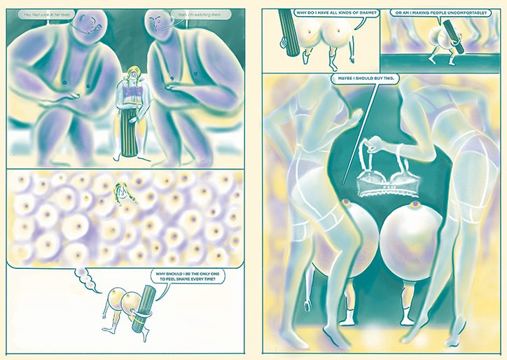

Shame. We’ve all felt it from time to time and dating back to Eve’s fall, the feeling of discomfort is an integral part of human existence. For the Korean illustrator Leebin Soyeon, who “often feels shame about a lot of things”, the emotion has been so prevalent, it’s even become a source of inspiration for her latest publication.
Titled Shape of Shame, the illustrator captures moments of shame through a beautifully crafted graphic novel. Leebin’s highly original drawing style, which utilises a melting pot of muted amber, turquoise and violet tones, acts as the underpinning engagement throughout the comic. She illustrates the things we feel most shameful about trapped in translucent objects from jellies, balloons, slime and so on.